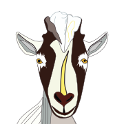

GoatNS

Yet another authoritative DNS name server. But with goat references.
Features
- DNS over HTTPS (RFC8484) on
/dns-query - Web API/UI for management
- OIDC Authentication to the Web UI
- Token auth for API endpoints
Configuration
Look at zones.json and goatns.example.json for examples.
The configuration file's fields are best found here:
https://goatns.dotgoat.net/rustdoc/goatns/config/struct.ConfigFile.html. Note that the
ip_allow_list field is a nested map.
Running in Docker
There's a docker container at ghcr.io/yaleman/goatns:latest and a docker-compose.yml file in the
repository if that's your thing.
Help?
Found a bug, want to change something, the sky is falling? Create an issue!.
Wondering how something works, need a chat, or are curious there's so many goat references? Discussions are great for that.
Built in Rust
Thanks to some great packages:
- Networking features use tokio
- DNS Packets are largely decoded/encoded with packed_struct
- HTTP things use:
- Database - sqlx for async SQLite goodness.
- Logging - flexi_logger
Rust Crate Documentation
Auto-generated and available here: https://yaleman.github.io/goatns/rustdoc/goatns
Testing
Rust tests are run using cargo.
cargo test
A handy load testing tool is dnsblast. This'll run 50,000 "valid" queries, 1500 packets per second, to port 15353:
./dnsblast 127.0.0.1 50000 1500 15353
Or if you want to fuzz the server and test that it doesn't blow up:
./dnsblast fuzz 127.0.0.1 50000 1500 15353
Supported request/record types
This list is now in the book.
Additional thanks
- "Home" by Kiki Rizky from Noun Project